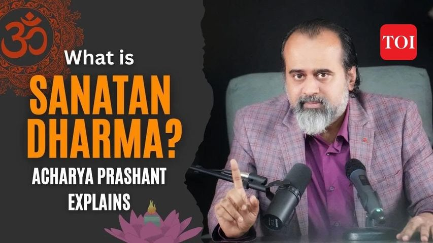
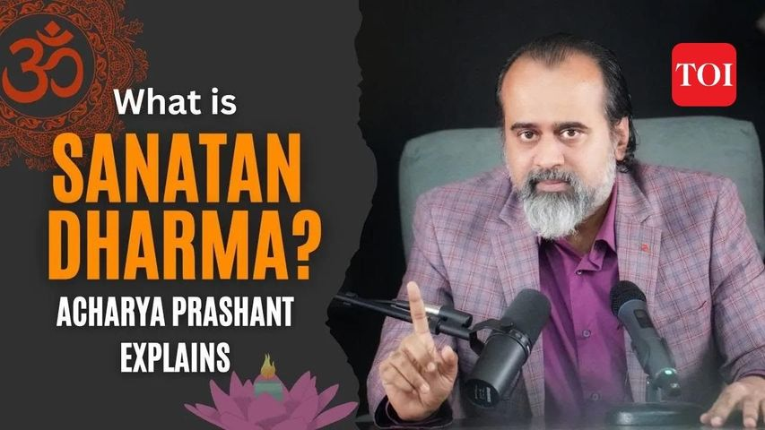

Acharya Prashant , an author, speaker and an Intellectual personality has qualified all the prominent exams like IIT, UPSC and IIM. He is a spirutual Guru who is focused on spreading teachings of Shrimad Bhagwat Geeta with general awareness. He has knowledge in almost every field like Sociology, History, Science and social issues like dowry, unemployement, casteism and social crimes like rape, abuse, social injustice. From sports to space, he shares his unbiased opinion and also hear others' problems.
Acharya Ji likes to talk in Hindi not because he doesn't know English instead he values the word "Rashtra Bhasha". At one end we are saying Hindi is our "Rashtra Bhasha" and at another end we are not confident in talking in Hindi then why we are saying it "Rashtra Bhasha". He is a philosophical person who talks logically with proper evidences and examples.
Acharya Ji takes many conferences accross India and worldwide. He shares his experiences and knowledge in an extremely simple way. He is a social person and an environmentalist. He speaks on climate change and global warming. He believes in pure state of mind and not in materialistic attractions.
Acharya Ji has got both offline and online presence. He has more than 1 million subscribers on Instagram and approx 52 M Youtube subscribers. It feels so secured when so many people are following a spiritual leader like him. The author of this page, me, ofcourse, listens to him whenever I am free from work. But he himself says that only listennig or seeing him won't help, we have to follow the ideas too which are beneficial for the society. Some of the current and burning issues that he talked on and shared his opinion are listed below. The reader must give attention to these topics.